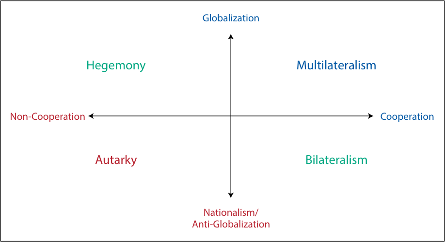
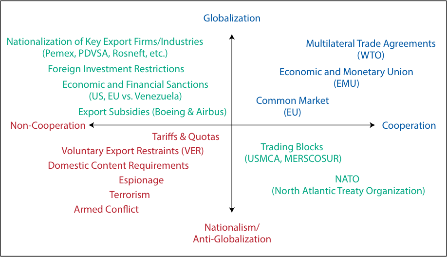
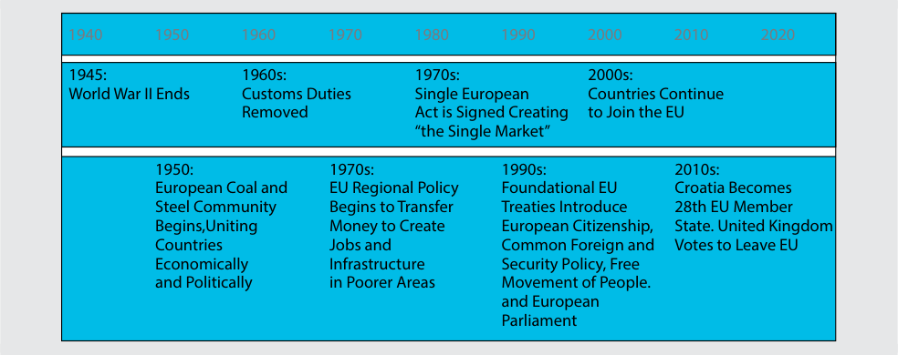

Learning Module 5 Introduction to Geopolitics - Part 3: Assessing Geopolitical Actors and Risk
Volume 2: Economics
Learning Module 5 Introduction to Geopolitics
Part 3/4: Assessing Geopolitical Actors and Risk (PDF Pages 175–186)
Tập 2: Kinh tế học (Volume 2: Economics)
Học phần 5: Giới thiệu về Địa chính trị (Learning Module 5: Introduction to Geopolitics)
Phần 3/4: Đánh giá các Chủ thể và Rủi ro Địa chính trị (Assessing Geopolitical Actors and Risk) (Trang PDF 175–186)
B. World Trade Organization (WTO) C. International Monetary Fund (IMF) Solution:
- B. Tổ chức Thương mại Thế giới (World Trade Organization – WTO)
- C. Quỹ Tiền tệ Quốc tế (International Monetary Fund – IMF)
C is correct. From an investment perspective, the IMF helps to keep country-specific market risk and global systemic risk under control. The Greek sovereign debt crisis in 2010, which threatened to destabilize the entire European banking system, is a recent example. The IMF’s mission is to ensure the stability of the international monetary system—that is, the system of exchange rates and international payments that enables countries to buy goods and services from each other.
Lời giải (Solution):
- Which of the following international trade bodies was the only multilateral body governing international trade from 1948 to 1995?
-
A. World Trade Organization (WTO)
-
B. International Trade Organization (ITO)
-
C. General Agreement on Tariffs and Trade (GATT)
-
Solution:
C là đáp án đúng. Từ góc độ đầu tư, IMF giúp kiểm soát rủi ro thị trường đặc thù của từng quốc gia và rủi ro hệ thống toàn cầu. Cuộc khủng hoảng nợ công Hy Lạp năm 2010, vốn đe dọa làm mất ổn định toàn bộ hệ thống ngân hàng Châu Âu, là một ví dụ gần đây. Sứ mệnh của IMF là đảm bảo sự ổn định của hệ thống tiền tệ quốc tế — tức là hệ thống tỷ giá hối đoái và thanh toán quốc tế cho phép các quốc gia mua bán hàng hóa và dịch vụ lẫn nhau.
C is correct. The GATT was the only multilateral body governing international trade from 1948 to 1995. It operated for almost half a century as a quasi-institutionalized, provisional system of multilateral treaties and included several rounds of negotiations.
- Cơ quan thương mại quốc tế nào sau đây là cơ quan đa phương duy nhất điều chỉnh thương mại quốc tế từ năm 1948 đến năm 1995?
-
A. Tổ chức Thương mại Thế giới (World Trade Organization – WTO)
-
B. Tổ chức Thương mại Quốc tế (International Trade Organization – ITO)
-
C. Hiệp định Chung về Thuế quan và Thương mại (General Agreement on Tariffs and Trade – GATT)
-
Lời giải (Solution):
ASSESSING GEOPOLITICAL ACTORS AND RISK
C là đáp án đúng. GATT là cơ quan đa phương duy nhất điều chỉnh thương mại quốc tế từ năm 1948 đến năm 1995. Hiệp định này đã vận hành trong gần nửa thế kỷ như một hệ thống các điều ước đa phương lâm thời, bán thể chế hóa và bao gồm nhiều vòng đàm phán khác nhau.
ĐÁNH GIÁ CÁC CHỦ THỂ VÀ RỦI RO ĐỊA CHÍNH TRỊ (ASSESSING GEOPOLITICAL ACTORS AND RISK)
5
5
describe geopolitical risk
mô tả rủi ro địa chính trị (describe geopolitical risk)
Using the two axes we have discussed—political cooperation versus non-cooperation and globalization versus nationalism—investment analysts can assess geopolitical actors and the likelihood of threat to investment outcomes. Where countries stand in that balance shapes their standing compared with other geopolitical actors, the tools of geopolitics they can use, and the threats and opportunities they face. This lesson provides a framework for analyzing a country’s geopolitical risk.
Sử dụng hai trục mà chúng ta đã thảo luận — hợp tác chính trị so với bất hợp tác và toàn cầu hóa so với chủ nghĩa dân tộc — các nhà phân tích đầu tư có thể đánh giá các chủ thể địa chính trị và xác suất xảy ra mối đe dọa đối với kết quả đầu tư. Vị trí của các quốc gia trên cán cân đó định hình vị thế của họ so với các chủ thể địa chính trị khác, các công cụ địa chính trị mà họ có thể sử dụng, cũng như những mối đe dọa và cơ hội mà họ phải đối mặt. Bài học này cung cấp một khung phân tích để đánh giá rủi ro địa chính trị của một quốc gia.
Archetypes of Country Behavior
Các hình mẫu Hành vi của Quốc gia (Archetypes of Country Behavior)
The framework, using the two axes, shown in Exhibit 7 presents four archetypes of country behavior: autarky , hegemony , multilateralism , and bilateralism . Each archetype has its own costs, benefits, and trade-offs with respect to geopolitical risk. In general terms, regions, countries, and industries that are more dependent on cross-border goods and capital flows will have growth rates and investment returns that benefit from greater global cooperation. The interdependent nature of their activities may reduce the likelihood that collaborative countries levy economic, financial, or political attacks on one another. That same interdependence often makes cooperative actors more vulnerable to geopolitical risk than those less dependent on cooperation and trade. Diversifying the means of production provides some shield against risk but also provides more touchpoints by which risk can occur. In the remainder of the section, we describe the costs and benefits of each archetype, with some examples of each.
Khung phân tích sử dụng hai trục được thể hiện trong Bảng minh họa 7 (Exhibit 7) trình bày bốn hình mẫu hành vi của quốc gia: tự cung tự cấp (autarky), bá quyền (hegemony), chủ nghĩa đa phương (multilateralism), và chủ nghĩa song phương (bilateralism). Mỗi hình mẫu đều có những chi phí, lợi ích và sự đánh đổi riêng đối với rủi ro địa chính trị. Xét về mặt tổng quát, các khu vực, quốc gia và ngành công nghiệp phụ thuộc nhiều hơn vào dòng chảy hàng hóa và dòng vốn xuyên biên giới sẽ có tốc độ tăng trưởng và tỷ suất sinh lợi đầu tư được hưởng lợi từ sự hợp tác toàn cầu lớn hơn. Bản chất phụ thuộc lẫn nhau trong các hoạt động của họ có thể làm giảm khả năng các quốc gia hợp tác tung ra các cuộc tấn công kinh tế, tài chính hoặc chính trị nhắm vào nhau. Tuy nhiên, chính sự phụ thuộc lẫn nhau đó thường khiến các chủ thể hợp tác trở nên dễ bị tổn thương hơn trước rủi ro địa chính trị so với những chủ thể ít phụ thuộc vào sự hợp tác và thương mại. Việc đa dạng hóa các phương thức sản xuất mang lại một lá chắn nhất định trước rủi ro nhưng đồng thời cũng tạo ra nhiều điểm tiếp xúc (touchpoints) hơn mà qua đó rủi ro có thể phát sinh. Trong phần còn lại của mục này, chúng ta sẽ mô tả chi phí và lợi ích của từng hình mẫu, kèm theo một số ví dụ cho mỗi hình mẫu.
Exhibit 7: Archetypes of Globalization and Cooperation
Bảng minh họa 7: Các hình mẫu của Toàn cầu hóa và Sự hợp tác (Exhibit 7: Archetypes of Globalization and Cooperation)

Chú thích hình ảnh: - Trục tung: Toàn cầu hóa (Globalization) ở phía trên $\leftrightarrow$ Chủ nghĩa dân tộc / Chống toàn cầu hóa (Nationalism / Anti-Globalization) ở phía dưới. - Trục hoành: Bất hợp tác (Non-Cooperation) ở bên trái $\leftrightarrow$ Hợp tác (Cooperation) ở bên phải. - Bốn góc phần tư (Hình mẫu): - Góc trên bên trái (Toàn cầu hóa + Bất hợp tác): Bá quyền (Hegemony) - Góc trên bên phải (Toàn cầu hóa + Hợp tác): Chủ nghĩa đa phương (Multilateralism) - Góc dưới bên trái (Chủ nghĩa dân tộc + Bất hợp tác): Tự cung tự cấp (Autarky) - Góc dưới bên phải (Chủ nghĩa dân tộc + Hợp tác): Chủ nghĩa song phương (Bilateralism)
Note that each of the axes explored in this framework—cooperation versus non-cooperation and globalization versus nationalism—represent a spectrum. Rarely do countries represent full extremes of either of these factors. As you can see from the examples provided, a country’s place within the framework can be a moving target. As such, the examples provided in no way represent a value judgment of a country’s goals or approach.
Lưu ý rằng mỗi trục được khám phá trong khung phân tích này — hợp tác so với bất hợp tác và toàn cầu hóa so với chủ nghĩa dân tộc — đều đại diện cho một dải phổ (spectrum). Hiếm khi các quốc gia đại diện cho những thái cực tuyệt đối của một trong hai yếu tố này. Như bạn có thể thấy từ các ví dụ được cung cấp, vị trí của một quốc gia trong khung phân tích có thể là một mục tiêu di động (moving target). Do đó, các ví dụ được đưa ra hoàn toàn không đại diện cho sự phán xét giá trị đối với mục tiêu hay cách tiếp cận của một quốc gia.
For geopolitical risk analysis, it matters not only which quadrant a country falls in today but also its stability within that quadrant. A hegemon that is working to build more political cooperation may be less of a threat to investment results than a multilateral actor trying to break them.
Đối với việc phân tích rủi ro địa chính trị, điều quan trọng không chỉ là một quốc gia đang nằm ở góc phần tư nào ngày hôm nay mà còn là sự ổn định của quốc gia đó bên trong góc phần tư đó. Một quốc gia bá quyền (hegemon) đang nỗ lực xây dựng thêm sự hợp tác chính trị có thể ít gây ra mối đe dọa cho kết quả đầu tư hơn là một chủ thể đa phương đang cố gắng phá vỡ các mối quan hệ hợp tác đó.
The “America first” example given in the section “Threats of Rollback of Globalization” is highly relevant. Adjusting previously agreed-upon rules may be in a country’s national interest, but inconsistent application of those rules presents a risk for companies and economic growth. Investors must be aware of actors’ movement within the framework to assess the likelihood and impact of geopolitical risk more appropriately.
Ví dụ về chính sách “Nước Mỹ trên hết” (“America first”) được nêu trong phần “Các mối đe dọa Đảo ngược Toàn cầu hóa” có tính liên hệ rất cao. Việc điều chỉnh các quy tắc đã được thỏa thuận trước đó có thể nằm trong lợi ích quốc gia của một đất nước, nhưng việc áp dụng thiếu nhất quán các quy tắc đó lại gây ra rủi ro cho các công ty và sự tăng trưởng kinh tế. Các nhà đầu tư phải nhận thức được sự dịch chuyển của các chủ thể bên trong khung phân tích để đánh giá xác suất và tác động của rủi ro địa chính trị một cách xác đáng hơn.
EXAMPLE 6
VÍ DỤ 6 (EXAMPLE 6)
Geopolitical Risk Analysis
Phân tích Rủi ro Địa chính trị (Geopolitical Risk Analysis)
- True or false: The relative permanence of geographic factors implies a fundamental stability in geopolitical risk analysis of the involved parties.
- Đúng hay sai: Tính chất tương đối vĩnh cửu của các yếu tố địa lý hàm ý một sự ổn định cơ bản trong việc phân tích rủi ro địa chính trị của các bên liên quan.
Explain your selection.
Hãy giải thích lựa chọn của bạn.
A. True
A. Đúng (True)
B. False
B. Sai (False)
Solution:
Lời giải (Solution):
B is correct. Geopolitical risk analysis is fundamentally dynamic, with analysts needing to be aware of the parties’ movement within the relevant framework to assess the likelihood and impact of geopolitical risk. Geopolitical actors face a delicate balance between harnessing the potential intrinsic and profit gains from globalization while managing the many and
B là đáp án đúng. Phân tích rủi ro địa chính trị về bản chất là một quá trình năng động (dynamic), đòi hỏi các nhà phân tích phải nhận thức được sự dịch chuyển của các bên bên trong khung phân tích liên quan để đánh giá xác suất và tác động của rủi ro địa chính trị. Các chủ thể địa chính trị phải đối mặt với sự cân bằng mong manh giữa việc khai thác các lợi ích nội tại và lợi nhuận tiềm năng từ toàn cầu hóa đồng thời quản lý vô số
sometimes unforeseen consequences. Further complicating the picture is the intricate connection between globalization and cooperation. A country’s place within the globalization and cooperation framework can be a moving target, and for geopolitical risk analysis, it matters not only which quadrant a company falls in today but also its stability within that quadrant.
những hệ quả đôi khi không lường trước được. Làm phức tạp thêm bức tranh này là mối liên kết chặt chẽ giữa toàn cầu hóa và sự hợp tác. Vị trí của một quốc gia trong khung phân tích toàn cầu hóa và hợp tác có thể là một mục tiêu di động, và đối với việc phân tích rủi ro địa chính trị, điều quan trọng không chỉ là một công ty hay quốc gia đang nằm ở góc phần tư nào ngày hôm nay mà còn là sự ổn định của nó bên trong góc phần tư đó.
Autarky
Tự cung tự cấp (Autarky)
Autarky describes countries seeking political self-sufficiency with little or no external trade or finance. State-owned enterprises control strategic domestic industries. The self-sufficiency of autarkic countries allows them to be stronger politically, including the ability to exercise complete control over the supply of technology, goods, and services, as well as media and political messaging. In some cases, periods of autarky can provide a country with swifter economic and political development. For example, for much of the 20th century, China could have been described as autarkic, exercising very little political cooperation or globalization. However, China’s autarkic stance resulted in substantial poverty alleviation and an eventual move toward more economic and financial cooperation. That said, an autarkic stance does not come without costs. In other cases, such as North Korea and the earlier example of Venezuela, autarky has resulted in a gradual loss of economic and political development within the country.
Tự cung tự cấp (Autarky) mô tả các quốc gia tìm kiếm sự tự chủ về chính trị với rất ít hoặc không có hoạt động thương mại hay tài chính đối ngoại. Các doanh nghiệp nhà nước (state-owned enterprises) kiểm soát các ngành công nghiệp nội địa mang tính chiến lược. Sự tự chủ của các quốc gia tự cung tự cấp cho phép họ mạnh mẽ hơn về mặt chính trị, bao gồm khả năng thực thi quyền kiểm soát hoàn toàn đối với nguồn cung công nghệ, hàng hóa và dịch vụ, cũng như truyền thông và thông điệp chính trị. Trong một số trường hợp, những giai đoạn tự cung tự cấp có thể mang lại cho một quốc gia sự phát triển kinh tế và chính trị nhanh chóng hơn. Ví dụ, trong phần lớn thế kỷ 20, Trung Quốc có thể được mô tả là tự cung tự cấp, thực hiện rất ít sự hợp tác chính trị hoặc toàn cầu hóa. Tuy nhiên, lập trường tự cung tự cấp của Trung Quốc đã dẫn đến kết quả giảm nghèo đáng kể và sự dịch chuyển sau đó hướng tới hợp tác kinh tế và tài chính nhiều hơn. Dù vậy, lập trường tự cung tự cấp không phải là không có cái giá phải trả. Trong các trường hợp khác, chẳng hạn như Triều Tiên và ví dụ trước đó về Venezuela, tình trạng tự cung tự cấp đã dẫn đến sự suy giảm dần dần về phát triển kinh tế và chính trị bên trong đất nước.
Hegemony
Bá quyền (Hegemony)
Hegemonic countries tend to be regional or even global leaders, and they use their political or economic influence of others to control resources. State-owned enterprises tend to control key export markets. A hegemonic system can provide valuable benefits both to the hegemonic countries and to the international system. For the country, economic and political dominance may provide important influence on global affairs. For the global system, countries aligning with the hegemon’s rules and standards may enjoy the rewards provided by the leader, including the stabilizing force of monitoring and enforcing the hegemon’s standards. That said, there may be costs to hegemonic systems. As hegemons gain or lose influence in the international system, they may become more competitive, increasing the likelihood of geopolitical risk.
Các quốc gia bá quyền (Hegemonic countries) có xu hướng là những nước dẫn đầu khu vực hoặc thậm chí là toàn cầu, và họ sử dụng tầm ảnh hưởng chính trị hoặc kinh tế của mình đối với các nước khác để kiểm soát các nguồn tài nguyên. Các doanh nghiệp nhà nước có xu hướng kiểm soát các thị trường xuất khẩu then chốt. Một hệ thống bá quyền có thể mang lại những lợi ích có giá trị cho cả các quốc gia bá quyền lẫn hệ thống quốc tế. Đối với bản thân quốc gia đó, sự thống trị về kinh tế và chính trị có thể mang lại tầm ảnh hưởng quan trọng đối với các vấn đề toàn cầu. Đối với hệ thống toàn cầu, các quốc gia đi theo các quy tắc và tiêu chuẩn của nước bá quyền có thể tận hưởng những phần thưởng do nước dẫn đầu mang lại, bao gồm cả lực lượng gây dựng sự ổn định thông qua việc giám sát và thực thi các tiêu chuẩn của nước bá quyền. Tuy nhiên, các hệ thống bá quyền cũng có thể đi kèm với những chi phí. Khi các nước bá quyền gia tăng hoặc đánh mất tầm ảnh hưởng trong hệ thống quốc tế, họ có thể trở nên cạnh tranh gay gắt hơn, làm tăng khả năng xảy ra rủi ro địa chính trị.
CHINA AND TECHNOLOGY TRANSFER
TRUNG QUỐC VÀ CHUYỂN GIAO CÔNG NGHỆ (CHINA AND TECHNOLOGY TRANSFER)
In 2011, China overtook Japan as the world’s second largest economy. Having joined the World Trade Organization (WTO) in 2001, China’s economy had globalized meaningfully. At the same time, the importance of China’s economy gave it important influence on the rules of play in the international stage. One area where China has exerted its political influence is in technology transfer. For many years, China’s stance was, in order to integrate into the Chinese production machine, including access to a skilled and plentiful labor supply, some companies would be required to transfer their technology ideas and processes to Chinese partners. For a smaller or less important economy, these rules might be difficult to enforce, but China’s size and importance made it possible. These policies may have some globalizing effects. By having Chinese companies adopt more international technological ideas and rules, they become more globalized in their approach. At the same time, they can also create investment risks. If China were to become more restrictive, it could disrupt global supply chains and increase costs for global companies.
Năm 2011, Trung Quốc vượt qua Nhật Bản để trở thành nền kinh tế lớn thứ hai thế giới. Sau khi gia nhập Tổ chức Thương mại Thế giới (WTO) vào năm 2001, nền kinh tế Trung Quốc đã toàn cầu hóa một cách đầy ý nghĩa. Đồng thời, tầm quan trọng của nền kinh tế Trung Quốc đã mang lại cho nước này ảnh hưởng quan trọng đối với các luật chơi trên trường quốc tế. Một lĩnh vực mà Trung Quốc đã thực thi ảnh hưởng chính trị của mình là chuyển giao công nghệ (technology transfer). Trong nhiều năm, lập trường của Trung Quốc là để hội nhập vào cỗ máy sản xuất của Trung Quốc, bao gồm cả việc tiếp cận nguồn cung lao động dồi dào và có tay nghề, một số công ty sẽ bị yêu cầu phải chuyển giao các ý tưởng và quy trình công nghệ của mình cho các đối tác Trung Quốc. Đối với một nền kinh tế nhỏ hơn hoặc ít quan trọng hơn, những quy tắc này có thể khó thực thi, nhưng quy mô và tầm quan trọng của Trung Quốc đã làm cho điều đó trở nên khả thi. Những chính sách này có thể mang lại một số tác động toàn cầu hóa. Bằng việc giúp các công ty Trung Quốc tiếp nhận nhiều ý tưởng và quy tắc công nghệ quốc tế hơn, họ trở nên toàn cầu hóa hơn trong cách tiếp cận của mình. Đồng thời, chúng cũng có thể tạo ra những rủi ro đầu tư. Nếu Trung Quốc trở nên hạn chế và khắt khe hơn, điều đó có thể làm gián đoạn các chuỗi cung ứng toàn cầu và làm tăng chi phí cho các công ty toàn cầu.
RUSSIA AND GAS DISPUTES
NGA VÀ CÁC TRANH CHẤP KHÍ ĐỐT (RUSSIA AND GAS DISPUTES)
Russia’s economy, and particularly its oil sector, is well-integrated into global supply chains. However, the country is also largely politically autonomous, which can contribute to geopolitical risk and uncertainty. For example, Russia’s control of important natural gas pipelines gives it significant political leverage over other countries, particularly those in Europe that rely on it for fossil fuels. As a result, European countries may be less likely to confront Russia in other areas. Between February and March 2014, Russia annexed Crimea, Ukraine. Other countries condemned the annexation and considered it to be a violation of international law, including such previously politically cooperative agreements as the 1991 Belavezha Accords that established the Commonwealth of Independent States. Still, the annexation continues, in part because many countries are unwilling to disrupt an important economic relationship.
Nền kinh tế Nga, và đặc biệt là lĩnh vực dầu mỏ của nước này, được hội nhập sâu vào các chuỗi cung ứng toàn cầu. Tuy nhiên, quốc gia này cũng phần lớn tự trị về mặt chính trị, điều có thể góp phần gây ra rủi ro và sự bất định về địa chính trị. Ví dụ, việc Nga kiểm soát các đường ống dẫn khí đốt tự nhiên quan trọng mang lại cho nước này đòn bẩy chính trị đáng kể đối với các quốc gia khác, đặc biệt là các quốc gia ở Châu Âu vốn phụ thuộc vào Nga về nhiên liệu hóa thạch. Kết quả là, các quốc gia Châu Âu có thể ít có xu hướng đối đầu với Nga trong các lĩnh vực khác. Trong khoảng thời gian từ tháng 2 đến tháng 3 năm 2014, Nga đã sáp nhập bán đảo Crimea của Ukraine. Các quốc gia khác đã lên án vụ sáp nhập này và coi đó là sự vi phạm luật pháp quốc tế, bao gồm cả các thỏa thuận hợp tác chính trị trước đó như Hiệp định Belavezha năm 1991 thành lập Cộng đồng các Quốc gia Độc lập (CIS). Tuy vậy, việc sáp nhập vẫn tiếp diễn, một phần vì nhiều quốc gia không muốn làm gián đoạn một mối quan hệ kinh tế quan trọng.
In addition to political uncertainty, the annexation contributed to important economic and market developments affecting investors. In the immediate aftermath of the annexation, the Russian ruble depreciated significantly, contributing to higher market volatility and inflation. Other significant economic impacts followed. For example, countries, including Canada, the United States, and European Union member states, imposed sanctions on Russian officials. Ukraine responded to the annexation by cutting off water to the area, contributing to crop failure.
Ngoài sự bất định về chính trị, vụ sáp nhập còn góp phần tạo ra những diễn biến kinh tế và thị trường quan trọng ảnh hưởng đến các nhà đầu tư. Ngay sau vụ sáp nhập, đồng rúp Nga đã mất giá đáng kể, góp phần làm tăng biến động thị trường và lạm phát. Các tác động kinh tế đáng kể khác cũng nối tiếp theo sau. Ví dụ, các quốc gia bao gồm Canada, Hoa Kỳ và các nước thành viên Liên minh Châu Âu đã áp đặt các lệnh trừng phạt lên các quan chức Nga. Ukraine đã đáp trả vụ sáp nhập bằng cách cắt nguồn cung cấp nước cho khu vực này, dẫn đến tình trạng mất mùa.
Multilateralism
Chủ nghĩa đa phương (Multilateralism)
Multilateralism describes countries that participate in mutually beneficial trade relationships and extensive rules harmonization. Private firms are fully integrated into global supply chains with multiple trade partners. Examples of multilateral countries include Germany and Singapore.
Chủ nghĩa đa phương (Multilateralism) mô tả các quốc gia tham gia vào các mối quan hệ thương mại cùng có lợi và hài hòa hóa sâu rộng các quy tắc. Các doanh nghiệp tư nhân hội nhập hoàn toàn vào các chuỗi cung ứng toàn cầu với nhiều đối tác thương mại. Ví dụ về các quốc gia theo chủ nghĩa đa phương bao gồm Đức và Singapore.
SINGAPORE AS MULTILATERAL ACTOR
SINGAPORE VỚI TƯ CÁCH LÀ CHỦ THỂ ĐA PHƯƠNG (SINGAPORE AS MULTILATERAL ACTOR)
Singapore is ranked as the most open economy in the world by the World Economic Forum, the third least corrupt by Transparency International, and the second most pro-business by the World Bank Doing Business Report. It has low tax rates and the second highest per capita GDP in terms of purchasing power of its citizens. The results are shown In Exhibit 8.
Singapore được Diễn đàn Kinh tế Thế giới (World Economic Forum) xếp hạng là nền kinh tế mở nhất thế giới, được Tổ chức Minh bạch Quốc tế (Transparency International) xếp hạng là quốc gia ít tham nhũng thứ ba, và được Báo cáo Môi trường Kinh doanh (Doing Business Report) của Ngân hàng Thế giới xếp hạng là quốc gia thân thiện với doanh nghiệp thứ hai. Nước này có mức thuế suất thấp và GDP bình quân đầu người cao thứ hai xét theo sức mua của công dân. Các kết quả được thể hiện trong Bảng minh họa 8 (Exhibit 8).
Exhibit 8: Select Global Data
Bảng minh họa 8: Một số Dữ liệu Toàn cầu Chọn lọc (Exhibit 8: Select Global Data)
| World Bank Ease of Doing Busi- ness Rank (2019) |
Corruption Perceptions Index Rank (2020) |
Corporate Tax Rate (2021) |
GDP (per capita, in international dollars, 2021) |
|
|---|---|---|---|---|
| Singapore | 2 | 3 | 17.00% | 95,650 |
| United States | 6 | 25 | 21.00% | 63,594 |
| Germany | 22 | 9 | 30.00% | 53,024 |
| Australia | 18 | 11 | 30.00% | 51,102 |
| United | 8 | 11 | 19.00% | 43,839 |
| Kingdom | ||||
| Japan | 29 | 19 | 30.60% | 41,507 |
| Mexico | 60 | 124 | 30.00% | 18,867 |
| Quốc gia | Xếp hạng Thuận lợi Kinh doanh của Ngân hàng Thế giới (World Bank Ease of Doing Business Rank) (2019) | Xếp hạng Chỉ số Cảm nhận Tham nhũng (Corruption Perceptions Index Rank) (2020) | Thuế suất Thuế Thu nhập Doanh nghiệp (Corporate Tax Rate) (2021) | GDP (bình quân đầu người, tính bằng đô la quốc tế, 2021) |
|---|---|---|---|---|
| Singapore | 2 | 3 | 17,00% | 95.650 |
| Hoa Kỳ (United States) | 6 | 25 | 21,00% | 63.594 |
| Đức (Germany) | 22 | 9 | 30,00% | 53.024 |
| Úc (Australia) | 18 | 11 | 30,00% | 51.102 |
| Vương quốc Anh (United Kingdom) | 8 | 11 | 19,00% | 43.839 |
| Nhật Bản (Japan) | 29 | 19 | 30,60% | 41.507 |
| Mexico | 60 | 124 | 30,00% | 18.867 |
| World Bank Ease of Doing Busi- ness Rank (2019) |
Corruption Perceptions Index Rank (2020) |
Corporate Tax Rate (2021) |
GDP (per capita, in international dollars, 2021) |
|
|---|---|---|---|---|
| China | 31 | 78 | 25.00% | 17,624 |
| Brazil | 124 | 94 | 34.00% | 14,563 |
| South Africa | 82 | 69 | 28.00% | 11,582 |
| Philippines | 95 | 115 | 30.00% | 8,436 |
| Quốc gia | Xếp hạng Thuận lợi Kinh doanh của Ngân hàng Thế giới (World Bank Ease of Doing Business Rank) (2019) | Xếp hạng Chỉ số Cảm nhận Tham nhũng (Corruption Perceptions Index Rank) (2020) | Thuế suất Thuế Thu nhập Doanh nghiệp (Corporate Tax Rate) (2021) | GDP (bình quân đầu người, tính bằng đô la quốc tế, 2021) |
|---|---|---|---|---|
| Trung Quốc (China) | 31 | 78 | 25,00% | 17.624 |
| Brazil | 124 | 94 | 34,00% | 14.563 |
| Nam Phi (South Africa) | 82 | 69 | 28,00% | 11.582 |
| Philippines | 95 | 115 | 30,00% | 8.436 |
Sources: World Bank (doingbusiness.org), Transparency International (transparency.org), KPMG, International Monetary Fund (imf.org).
Nguồn (Sources): Ngân hàng Thế giới (doingbusiness.org), Tổ chức Minh bạch Quốc tế (transparency.org), KPMG, Quỹ Tiền tệ Quốc tế (imf.org).
What is behind these impressive statistics? For starters, Singapore’s factor endowment makes it highly dependent on cooperation and innovation to survive. The country has limited natural resources, including water and arable land, which means the country must rely on agrotechnology parks and reclaimed land for agricultural production as well as trade partners for the inputs to that production.
Điều gì đứng đằng sau những con số thống kê ấn tượng này? Trước hết, các yếu tố nguồn lực sẵn có (factor endowment) của Singapore khiến nước này phụ thuộc rất nhiều vào sự hợp tác và đổi mới sáng tạo để sinh tồn. Đất nước này có nguồn tài nguyên thiên nhiên hạn chế, bao gồm cả nước ngọt và đất canh tác, có nghĩa là quốc gia này phải dựa vào các khu công nghệ nông nghiệp và đất lấn biển để sản xuất nông nghiệp cũng như dựa vào các đối tác thương mại để có các yếu tố đầu vào cho hoạt động sản xuất đó.
Geographic factors also contribute to Singapore’s economic openness. The country is located at the intersection of many important global trade routes. Its population is highly ethnically and racially diverse, allowing for English as a key language for global business. In addition, its workforce is highly skilled, giving Singapore an important role as a center for trade and innovation throughout Asia.
Các yếu tố địa lý cũng góp phần tạo nên độ mở kinh tế của Singapore. Quốc gia này nằm ở giao điểm của nhiều tuyến đường thương mại toàn cầu quan trọng. Dân số của nước này rất đa dạng về sắc tộc và chủng tộc, cho phép tiếng Anh trở thành ngôn ngữ chính cho hoạt động kinh doanh toàn cầu. Ngoài ra, lực lượng lao động của nước này có trình độ tay nghề rất cao, mang lại cho Singapore một vai trò quan trọng như một trung tâm thương mại và đổi mới sáng tạo trên khắp Châu Á.
Politically, Singapore has highly stable institutions. The government is strategically involved in its economic system to allow for consistent prioritization of economic activity and enforcement of business-friendly institutional governance. Singapore’s openness has contributed to its attractiveness as a potential partner.
Về mặt chính trị, Singapore có các định chế hết sức ổn định. Chính phủ tham gia một cách có chiến lược vào hệ thống kinh tế để cho phép ưu tiên nhất quán cho hoạt động kinh tế và thực thi quản trị thể chế thân thiện với doanh nghiệp. Độ mở của Singapore đã góp phần tạo nên sức hấp dẫn của nước này với tư cách là một đối tác tiềm năng.
As a result of its location and factor endowments, Singapore is both capable of and highly dependent on international cooperation for its economic growth. The country generates higher economic growth rates because of this greater global cooperation. However, that same cooperation may leave Singapore more vulnerable to geopolitical risk than those countries that are less dependent on cooperation and trade.
Do vị trí địa lý và các yếu tố nguồn lực sẵn có, Singapore vừa có năng lực vừa phụ thuộc cao độ vào sự hợp tác quốc tế để tăng trưởng kinh tế. Quốc gia này tạo ra tốc độ tăng trưởng kinh tế cao hơn nhờ sự hợp tác toàn cầu sâu rộng hơn này. Tuy nhiên, chính sự hợp tác đó có thể khiến Singapore dễ bị tổn thương hơn trước rủi ro địa chính trị so với những quốc gia ít phụ thuộc hơn vào hợp tác và thương mại.
EXAMPLE 7
VÍ DỤ 7 (EXAMPLE 7)
Key Globalization Factors
Các Yếu tố Toàn cầu hóa Then chốt (Key Globalization Factors)
- Identify at least two of the factors accounting for Singapore’s reliance on globalization to achieve economic success.
- Hãy xác định ít nhất hai trong số các yếu tố giải thích cho sự phụ thuộc của Singapore vào toàn cầu hóa để đạt được thành công về kinh tế.
Solution:
Lời giải (Solution):
First, Singapore’s factor endowment of limited natural resources makes it dependent on cooperation and innovation to survive.
Thứ nhất, nguồn lực sẵn có của Singapore với tài nguyên thiên nhiên hạn chế khiến nước này phụ thuộc vào sự hợp tác và đổi mới sáng tạo để sinh tồn.
Second, Singapore’s geographic location at the intersection of multiple important global trade routes helps make it an Asian center for world business. Third, culturally it has a highly ethnically and racially diverse population fluent in the key global business language of English, enhancing its collaborative capabilities.
Thứ hai, vị trí địa lý của Singapore nằm tại giao điểm của nhiều tuyến đường thương mại toàn cầu quan trọng giúp biến nước này thành một trung tâm kinh doanh thế giới tại Châu Á. Thứ ba, về mặt văn hóa, nước này có dân số đa dạng về sắc tộc và chủng tộc, thông thạo ngôn ngữ kinh doanh toàn cầu quan trọng là tiếng Anh, giúp nâng cao năng lực hợp tác của mình.
Finally, it has highly stable political institutions with high governmental priorities on promoting economic activity and enforcing business-friendly
Cuối cùng, nước này có các định chế chính trị hết sức ổn định với các ưu tiên cao của chính phủ trong việc thúc đẩy hoạt động kinh tế và thực thi quản trị thể chế thân thiện với doanh nghiệp.
institutional governance. These qualities make it an attractive potential business partner and likely sought out for global cooperation.
Những phẩm chất này khiến Singapore trở thành một đối tác kinh doanh tiềm năng đầy hấp dẫn và thường được tìm kiếm để hợp tác toàn cầu.
Bilateralism
Chủ nghĩa song phương (Bilateralism)
Bilateralism is the conduct of political, economic, financial, or cultural cooperation between two countries. Countries engaging in bilateralism may have relations with many different countries, but they are one-at-a-time agreements without multiple partners. Typically, countries exist on a spectrum between bilateralism and multilateralism. In between the two extremes is regionalism , in which a group of countries cooperate with one another. Both bilateralism and regionalism can be conducted at the exclusion of other groups. For example, regional blocs may agree to provide trade benefits to one another and increase barriers for those outside of that group.
Chủ nghĩa song phương (Bilateralism) là việc tiến hành hợp tác chính trị, kinh tế, tài chính hoặc văn hóa giữa hai quốc gia. Các quốc gia tham gia vào chủ nghĩa song phương có thể có quan hệ với nhiều quốc gia khác nhau, nhưng đó là những thỏa thuận từng đôi một (one-at-a-time agreements) mà không có sự tham gia đồng thời của nhiều đối tác. Thông thường, các quốc gia tồn tại trên một dải phổ nằm giữa chủ nghĩa song phương và chủ nghĩa đa phương. Nằm giữa hai thái cực này là chủ nghĩa khu vực (regionalism), trong đó một nhóm các quốc gia hợp tác với nhau. Cả chủ nghĩa song phương và chủ nghĩa khu vực đều có thể được tiến hành theo hướng loại trừ các nhóm khác. Ví dụ, các khối khu vực (regional blocs) có thể đồng ý dành các ưu đãi thương mại cho nhau và dựng lên các rào cản cao hơn đối với những nước nằm ngoài nhóm đó.
It is noteworthy that relatively few countries perfectly fit the bilateral mold. Moving toward stronger political cooperation tends to lead organically to globalization; it is common for non-state actors to globalize as long as the path is laid for them. Additionally, innovations, such as the internet and digital transfer, have made it even easier for firms to globalize.
Đáng chú ý là có tương đối ít quốc gia hoàn toàn vừa vặn với khuôn mẫu song phương thuần túy. Việc tiến tới hợp tác chính trị mạnh mẽ hơn có xu hướng dẫn dắt một cách tự nhiên tới toàn cầu hóa; việc các chủ thể phi nhà nước tiến hành toàn cầu hóa là điều phổ biến miễn là con đường đã được mở sẵn cho họ. Ngoài ra, những đổi mới sáng tạo như Internet và chuyển giao kỹ thuật số đã giúp các doanh nghiệp toàn cầu hóa dễ dàng hơn nữa.
Bilateralism once nicely described Japan; its government engaged in substantial political cooperation for the sake of building a strong export market, but it did not globalize its imports. That said, as the importance of international capital markets has deepened, Japan has been a pioneer of globalizing its equity and bond markets for international players. Today it would be considered a multilateral player.
Chủ nghĩa song phương từng mô tả khá chính xác về Nhật Bản trước đây; chính phủ nước này đã tham gia vào sự hợp tác chính trị sâu rộng vì mục tiêu xây dựng một thị trường xuất khẩu hùng mạnh, nhưng lại không toàn cầu hóa hoạt động nhập khẩu của mình. Tuy nhiên, khi tầm quan trọng của các thị trường vốn quốc tế ngày càng sâu sắc hơn, Nhật Bản đã trở thành quốc gia tiên phong trong việc toàn cầu hóa thị trường cổ phiếu và trái phiếu của mình cho các nhà đầu tư quốc tế. Ngày nay, Nhật Bản sẽ được coi là một chủ thể đa phương (multilateral player).
QUESTION SET
BỘ CÂU HỎI (QUESTION SET)
- For the following contrasting pairs of archetypes of globalization and cooperation, which one reflects the greatest differences in country behavior?
-
A. Bilateralism versus autarky
-
B. Multilateralism versus autarky
-
C. Multilateralism versus hegemony
- Trong số các cặp hình mẫu đối lập về toàn cầu hóa và hợp tác dưới đây, cặp nào phản ánh sự khác biệt lớn nhất trong hành vi của quốc gia?
-
A. Chủ nghĩa song phương so với tự cung tự cấp (Bilateralism versus autarky)
-
B. Chủ nghĩa đa phương so với tự cung tự cấp (Multilateralism versus autarky)
-
C. Chủ nghĩa đa phương so với bá quyền (Multilateralism versus hegemony)
Solution:
Lời giải (Solution):
B is correct. Multilateralism describes countries that participate in mutually beneficial trade relationships and extensive rules harmonization. Autarky describes countries seeking political self-sufficiency with little or no external trade or finance. In the Exhibit 7 display of these behavior patterns, these choices are most widely separated on both the globalization and cooperation continuums. A is incorrect because bilateral or regional approaches describe those countries leveraging regional trade relationships and may face the world as a group. Bilateralism shares with autarky a bias against globalization. These approaches diverge, however, regarding cooperation, with autarky being more non-cooperative. C is incorrect because multilateralism describes countries that participate in mutually beneficial trade relationships and extensive rules harmonization. Hegemony represents countries exerting political or economic influence of others to control resources. Multilateralism shares with hegemony an inclination toward globalization, as shown in Exhibit 7, but diverges from hegemony regarding cooperation; hegemony is more non-cooperative.
B là đáp án đúng. Chủ nghĩa đa phương mô tả các quốc gia tham gia vào các mối quan hệ thương mại cùng có lợi và hài hòa hóa sâu rộng các quy tắc. Tự cung tự cấp mô tả các quốc gia tìm kiếm sự tự chủ về chính trị với rất ít hoặc không có thương mại hay tài chính đối ngoại. Trong Bảng minh họa 7 thể hiện các khuôn mẫu hành vi này, hai lựa chọn này nằm cách xa nhau nhất trên cả hai trục liên tục về toàn cầu hóa và hợp tác. A sai vì cách tiếp cận song phương hoặc khu vực mô tả những quốc gia tận dụng các mối quan hệ thương mại khu vực và có thể đối diện với thế giới như một nhóm. Chủ nghĩa song phương có chung với tự cung tự cấp sự thiên lệch chống lại toàn cầu hóa. Tuy nhiên, các cách tiếp cận này khác nhau về mặt hợp tác, trong đó tự cung tự cấp mang tính bất hợp tác nhiều hơn. C sai vì chủ nghĩa đa phương mô tả các quốc gia tham gia vào các mối quan hệ thương mại cùng có lợi và hài hòa hóa sâu rộng các quy tắc. Bá quyền đại diện cho các quốc gia thực thi ảnh hưởng chính trị hoặc kinh tế lên các nước khác để kiểm soát tài nguyên. Chủ nghĩa đa phương có chung với bá quyền xu hướng thiên về toàn cầu hóa, như được thể hiện trong Bảng minh họa 7, nhưng lại khác biệt với bá quyền về mặt hợp tác; bá quyền mang tính bất hợp tác nhiều hơn.
THE TOOLS OF GEOPOLITICS
CÁC CÔNG CỤ CỦA ĐỊA CHÍNH TRỊ (THE TOOLS OF GEOPOLITICS)
6
6
describe tools of geopolitics and their impact on regions and economies
mô tả các công cụ của địa chính trị và tác động của chúng đối với các khu vực và nền kinh tế (describe tools of geopolitics and their impact on regions and economies)
Now that we understand the characteristics of geopolitical actors, we can examine the tools these actors use to manifest or reinforce their interests with respect to others. The tools an actor uses are ultimately the source of geopolitical risk as it affects investors—shaping the likelihood of risk as well as the speed and size of impact, as we will explore in Lesson 6. As a result, understanding these tools may be just as important as understanding the motivations for using them.
Bây giờ, khi chúng ta đã hiểu được đặc điểm của các chủ thể địa chính trị, chúng ta có thể xem xét các công cụ mà những chủ thể này sử dụng để thể hiện hoặc củng cố lợi ích của họ đối với các chủ thể khác. Các công cụ mà một chủ thể sử dụng suy cho cùng chính là nguồn gốc của rủi ro địa chính trị khi nó tác động đến các nhà đầu tư — định hình xác suất xảy ra rủi ro cũng như tốc độ và quy mô tác động, như chúng ta sẽ khám phá trong Bài học 6. Do đó, việc hiểu rõ những công cụ này có thể cũng quan trọng không kém việc hiểu rõ động cơ sử dụng chúng.
The Tools of Geopolitics
Các công cụ của Địa chính trị (The Tools of Geopolitics)
The tools of geopolitics may be separated into three types:
Các công cụ của địa chính trị có thể được chia thành ba loại:
-
national security tools,
-
economic tools, and
-
financial tools.
-
các công cụ an ninh quốc gia (national security tools),
-
các công cụ kinh tế (economic tools), và
-
các công cụ tài chính (financial tools).
Among each of these tools, there are choices that reflect or improve cooperation and those that reflect or escalate conflict (non-cooperation). Tools facilitating cooperation are those that increase flows between countries; this can mean an increased flow of goods, services, capital, or labor through treaties, trade agreements, capital provisions, and approved migration. Tools escalating conflict are those that reduce these flows between countries.
Trong mỗi loại công cụ này, đều có những lựa chọn phản ánh hoặc cải thiện sự hợp tác và những lựa chọn phản ánh hoặc làm leo thang xung đột (bất hợp tác). Các công cụ tạo thuận lợi cho sự hợp tác là những công cụ làm gia tăng các dòng chảy giữa các quốc gia; điều này có thể đồng nghĩa với dòng chảy hàng hóa, dịch vụ, vốn hoặc lao động gia tăng thông qua các hiệp ước, hiệp định thương mại, các điều khoản về vốn và hoạt động di cư được phê duyệt. Các công cụ làm leo thang xung đột là những công cụ làm suy giảm các dòng chảy này giữa các quốc gia.
We can use the framework provided in the section “Archetypes of Country Behavior” in Lesson 4 to assess the nature of tools used by geopolitical actors and to strengthen our designation of countries within that framework. The extent to which actors use these tools to improve cooperation or escalate conflict influences their position within the framework. As we described earlier, it is important for geopolitical risk analysts to track not only which quadrant best describes an actor but also its stability within that quadrant. Using different national security, economic, or financial tools may indicate that an actor is changing in character, which would increase or decrease geopolitical risk. Exhibit 9 shows how the tools of geopolitics fit in the four archetypes of country behavior (presented in Exhibit 7).
Chúng ta có thể sử dụng khung phân tích được cung cấp trong phần “Các hình mẫu Hành vi của Quốc gia” để đánh giá bản chất của các công cụ được các chủ thể địa chính trị sử dụng và để củng cố việc phân loại các quốc gia bên trong khung phân tích đó. Mức độ mà các chủ thể sử dụng những công cụ này để cải thiện sự hợp tác hoặc làm leo thang xung đột sẽ ảnh hưởng đến vị trí của họ trong khung phân tích. Như chúng ta đã mô tả ở phần trước, điều quan trọng đối với các nhà phân tích rủi ro địa chính trị là phải theo dõi không chỉ góc phần tư nào mô tả đúng nhất một chủ thể mà còn cả sự ổn định của chủ thể đó bên trong góc phần tư ấy. Việc sử dụng các công cụ an ninh quốc gia, kinh tế hoặc tài chính khác nhau có thể cho thấy một chủ thể đang thay đổi về tính chất, điều này sẽ làm tăng hoặc giảm rủi ro địa chính trị. Bảng minh họa 9 (Exhibit 9) cho thấy cách thức các công cụ của địa chính trị khớp với bốn hình mẫu hành vi của quốc gia (được trình bày trong Bảng minh họa 7).
Exhibit 9: Tools of Geopolitics
Bảng minh họa 9: Các công cụ của Địa chính trị (Exhibit 9: Tools of Geopolitics)

Chú thích hình ảnh (Các công cụ Địa chính trị theo 4 góc phần tư): - Góc trên bên trái (Toàn cầu hóa + Bất hợp tác / Bá quyền): Quốc hữu hóa các doanh nghiệp/ngành công nghiệp xuất khẩu trọng điểm (Nationalization of Key Export Firms/Industries: Pemex, PDVSA, Rosneft, v.v.); Hạn chế đầu tư nước ngoài (Foreign Investment Restrictions); Các lệnh trừng phạt kinh tế và tài chính (Economic and Financial Sanctions: Hoa Kỳ, EU đối với Venezuela); Trợ cấp xuất khẩu (Export Subsidies: Boeing & Airbus). - Góc trên bên phải (Toàn cầu hóa + Hợp tác / Chủ nghĩa đa phương): Các hiệp định thương mại đa phương (Multilateral Trade Agreements: WTO); Liên minh Kinh tế và Tiền tệ (Economic and Monetary Union – EMU); Thị trường chung (Common Market – EU). - Góc dưới bên trái (Chủ nghĩa dân tộc + Bất hợp tác / Tự cung tự cấp): Thuế quan & Hạn ngạch (Tariffs & Quotas); Hạn chế xuất khẩu tự nguyện (Voluntary Export Restraints – VER); Yêu cầu tỷ lệ nội địa hóa (Domestic Content Requirements); Gián điệp (Espionage); Khủng bố (Terrorism); Xung đột vũ trang (Armed Conflict). - Góc dưới bên phải (Chủ nghĩa dân tộc + Hợp tác / Chủ nghĩa song phương & Khu vực): Các khối thương mại (Trading Blocks: USMCA, MERCOSUR); Tổ chức Hiệp ước Bắc Đại Tây Dương (NATO – North Atlantic Treaty Organization).
National Security Tools
Các công cụ An ninh Quốc gia (National Security Tools)
National security tools are those used to influence or coerce a state actor through direct or indirect impact on the country’s resources, people, or borders. National security tools may be active, meaning they are being used at the time of analysis, or threatened, meaning they are not currently used but their use is likely enough to warrant concern.
Các công cụ an ninh quốc gia là những công cụ được sử dụng để gây ảnh hưởng hoặc ép buộc một chủ thể nhà nước thông qua tác động trực tiếp hoặc gián tiếp lên tài nguyên, con người hoặc biên giới của quốc gia đó. Các công cụ an ninh quốc gia có thể đang hoạt động (active), nghĩa là chúng đang được sử dụng tại thời điểm phân tích, hoặc đang ở dạng đe dọa (threatened), nghĩa là chúng hiện chưa được sử dụng nhưng khả năng được sử dụng là đủ lớn để gây quan ngại.
The most extreme example of a national security tool is that of armed conflict. Armed conflict is a direct and active national security tool. It can be internal or external to a country and has two major impacts. The first is the disruption or destruction of physical infrastructure, which can inflict long-term damage on a country’s capital stock and ability to rebuild that stock. The second impact is on migration away from areas of armed conflict, which can reshape international flows of goods, services, capital, and labor. It also can affect neighboring countries and states accepting refugees.
Ví dụ cực đoan nhất của một công cụ an ninh quốc gia là xung đột vũ trang (armed conflict). Xung đột vũ trang là một công cụ an ninh quốc gia trực tiếp và tích cực. Nó có thể diễn ra ở bên trong hoặc bên ngoài một quốc gia và có hai tác động lớn. Tác động thứ nhất là sự gián đoạn hoặc phá hủy cơ sở hạ tầng vật chất, điều có thể gây ra thiệt hại lâu dài cho trữ lượng vốn (capital stock) của một quốc gia và khả năng tái thiết trữ lượng vốn đó. Tác động thứ hai là làn sóng di cư rời khỏi các khu vực có xung đột vũ trang, điều có thể định hình lại các dòng chảy quốc tế của hàng hóa, dịch vụ, vốn và lao động. Nó cũng có thể ảnh hưởng đến các nước láng giềng và các quốc gia tiếp nhận người tị nạn.
SYRIAN REFUGEE CRISIS (SINCE 2011) AND IMPACTS ON GERMANY
CUỘC KHỦNG HOẢNG NGƯỜI TỊ NẠN SYRIA (TỪ NĂM 2011) VÀ TÁC ĐỘNG ĐỐI VỚI NƯỚC ĐỨC (SYRIAN REFUGEE CRISIS (SINCE 2011) AND IMPACTS ON GERMANY)
The Syrian refugee crisis began in March 2011 after a violent government crackdown on public demonstrations. Protests turned into an armed rebellion and escalated to civil war. As a result, Syria has experienced extreme deterioration of its physical infrastructure, including buildings transportation, and other structures. As conflict prolonged, more than 6.6 million Syrians have fled the country, with another 6.7 million having been internally displaced. Beyond the tragic human toll of this ongoing conflict, Syria has also experienced negative impact on its current and potential economic growth as a result of the deterioration of its capital and labor stock. According to the International Monetary Fund (IMF), Syria’s economy grew by 4.5 percent, on average, from 2000 to 2010. By 2016, the Syrian economy was less than half its size before the war. In investment terms, these developments have contributed to a sustained higher discount rate and lower bond and equity returns.
Cuộc khủng hoảng người tị nạn Syria bắt đầu vào tháng 3 năm 2011 sau một cuộc trấn áp bạo lực của chính phủ đối với các cuộc biểu tình công chúng. Các cuộc biểu tình biến thành một cuộc nổi dậy vũ trang và leo thang thành nội chiến. Hậu quả là Syria đã phải hứng chịu sự xuống cấp và tàn phá cực độ đối với cơ sở hạ tầng vật chất của mình, bao gồm các tòa nhà, hệ thống giao thông và các công trình khác. Khi xung đột kéo dài, hơn 6,6 triệu người Syria đã phải chạy trốn khỏi đất nước, cùng với 6,7 triệu người khác phải di tản trong nước. Vượt ra ngoài những tổn thất bi thảm về sinh mạng con người của cuộc xung đột đang tiếp diễn này, Syria còn phải gánh chịu tác động tiêu cực đến tăng trưởng kinh tế hiện tại và tiềm năng của mình do sự suy kiệt của trữ lượng vốn và lực lượng lao động. Theo Quỹ Tiền tệ Quốc tế (IMF), nền kinh tế Syria đã tăng trưởng trung bình 4,5% từ năm 2000 đến năm 2010. Đến năm 2016, quy mô nền kinh tế Syria chỉ còn chưa đầy một nửa so với trước chiến tranh. Xét dưới góc độ đầu tư, những diễn biến này đã góp phần dẫn đến mức lãi suất chiết khấu (discount rate) duy trì ở mức cao hơn và tỷ suất sinh lợi trái phiếu cũng như cổ phiếu thấp hơn.
The majority of refugees have found refuge in neighboring countries, such as Turkey, Lebanon, and Jordan. However, many also made their way, often by dangerous routes, to European countries. The refugee crisis attracted significant international attention in 2015 when German Chancellor Angela Merkel
Phần lớn người tị nạn đã tìm thấy nơi trú ẩn tại các quốc gia láng giềng, chẳng hạn như Thổ Nhĩ Kỳ, Lebanon và Jordan. Tuy nhiên, nhiều người cũng đã tìm đường, thường là qua những tuyến đường đầy hiểm nguy, để tới các quốc gia Châu Âu. Cuộc khủng hoảng người tị nạn đã thu hút sự chú ý quốc tế đáng kể vào năm 2015 khi Thủ tướng Đức Angela Merkel
announced that the country would admit 1 million Syrian refugees. In the short-term, the decision was disruptive to domestic politics and international cooperation as not all citizens and neighboring countries were supportive of the approach. The decision also carried economic costs, including constructing housing and establishing resettlement programs. However, in the long-term, Germany appears to be benefiting from the cooperative decision, having attracted a younger and skilled demographic of migrants thus improving the demographic balance of an otherwise-aging country. The resulting improvements in Germany’s labor and capital stock may improve Germany’s potential economic growth rate. In investment terms, a higher potential economic growth rate contributes to higher expected market returns, all else equal, and may contribute to industry developments or innovations.
tuyên bố rằng nước này sẽ tiếp nhận 1 triệu người tị nạn Syria. Trong ngắn hạn, quyết định này đã gây xáo trộn nền chính trị trong nước và sự hợp tác quốc tế vì không phải mọi công dân và quốc gia láng giềng đều ủng hộ cách tiếp cận này. Quyết định này cũng đi kèm với những chi phí kinh tế, bao gồm việc xây dựng nhà ở và thiết lập các chương trình tái định cư. Tuy nhiên, trong dài hạn, Đức dường như đang được hưởng lợi từ quyết định mang tính hợp tác này, khi đã thu hút được một nhóm nhân khẩu học người di cư trẻ tuổi và có kỹ năng, qua đó cải thiện sự cân bằng nhân khẩu học của một quốc gia vốn đang bị già hóa dân số. Những sự cải thiện kéo theo đối với lực lượng lao động và trữ lượng vốn của Đức có thể cải thiện tốc độ tăng trưởng kinh tế tiềm năng (potential economic growth rate) của nước này. Xét dưới góc độ đầu tư, tốc độ tăng trưởng kinh tế tiềm năng cao hơn góp phần mang lại tỷ suất sinh lợi kỳ vọng của thị trường cao hơn, với giả định các yếu tố khác không đổi (all else equal), và có thể đóng góp vào sự phát triển hoặc đổi mới sáng tạo của các ngành công nghiệp.
Of course, not all tools are used in so direct a nature as armed conflict. For example, espionage, or the practice of using spies to obtain political or military information, is a necessarily indirect national security tool. Military alliances often are used to aid in direct conflict and also to deter conflict from arising in the first place.
Tất nhiên, không phải tất cả các công cụ đều được sử dụng một cách trực tiếp như xung đột vũ trang. Ví dụ, hoạt động gián điệp (espionage), hay việc sử dụng điệp viên để thu thập thông tin chính trị hoặc quân sự, tất yếu là một công cụ an ninh quốc gia gián tiếp. Các liên minh quân sự thường được sử dụng để hỗ trợ trong xung đột trực tiếp và cũng để răn đe, ngăn chặn xung đột phát sinh ngay từ đầu.
Additionally, not all national security tools are used in a non-cooperative way. State actors can combine forces to reduce the likelihood that national security tools are used. For example, the North Atlantic Treaty Organization (NATO), an alliance between the European Union, United States, United Kingdom, and Canada, is used to discuss and deescalate potential conflict among members and between members and outside states. Originally constructed to provide collective security against the Soviet Union, NATO now serves as a collective effort to reduce nuclear proliferation and other common national security goals.
Ngoài ra, không phải tất cả các công cụ an ninh quốc gia đều được sử dụng theo cách bất hợp tác. Các chủ thể nhà nước có thể hợp lực để giảm thiểu khả năng các công cụ an ninh quốc gia bị đem ra sử dụng. Ví dụ, Tổ chức Hiệp ước Bắc Đại Tây Dương (North Atlantic Treaty Organization – NATO), một liên minh giữa Liên minh Châu Âu, Hoa Kỳ, Vương quốc Anh và Canada, được sử dụng để thảo luận và hạ nhiệt các xung đột tiềm tàng giữa các thành viên và giữa các thành viên với các quốc gia bên ngoài. Ban đầu được xây dựng nhằm cung cấp nền an ninh tập thể chống lại Liên Xô, NATO hiện đóng vai trò là một nỗ lực tập thể nhằm giảm thiểu sự phổ biến vũ khí hạt nhân và hướng tới các mục tiêu an ninh quốc gia chung khác.
EXAMPLE 8
VÍ DỤ 8 (EXAMPLE 8)
Tools of Geopolitics
Các công cụ của Địa chính trị (Tools of Geopolitics)
- True or false: Although geopolitical financial tools can be used for both cooperative and non-cooperative reasons, national security tools are characteristically non-cooperative. Explain your selection.
- Đúng hay sai: Mặc dù các công cụ tài chính địa chính trị có thể được sử dụng cho cả lý do hợp tác và bất hợp tác, nhưng các công cụ an ninh quốc gia về bản chất là bất hợp tác. Hãy giải thích lựa chọn của bạn.
A. True
A. Đúng (True)
B. False
B. Sai (False)
Solution:
Lời giải (Solution):
B is correct. National security tools are non-cooperative in cases like armed conflict. But collective security agreements, such as NATO, can also be used cooperatively to reduce the possibility of conflict among members and between members and outside states.
B là đáp án đúng. Các công cụ an ninh quốc gia mang tính bất hợp tác trong những trường hợp như xung đột vũ trang. Nhưng các thỏa thuận an ninh tập thể, chẳng hạn như NATO, cũng có thể được sử dụng một cách hợp tác để làm giảm khả năng xảy ra xung đột giữa các thành viên và giữa các thành viên với các quốc gia bên ngoài.
Financial tools may be cooperative in reducing geopolitical risk if they encourage cooperation in security, economic, or financial arenas. They may also tend to non-cooperation by creating vulnerabilities in the international system. US dominance is one such example, both promoting financial activity and making other countries vulnerable to US monetary policy changes.
Các công cụ tài chính có thể mang tính hợp tác trong việc làm giảm rủi ro địa chính trị nếu chúng khuyến khích sự hợp tác trên các lĩnh vực an ninh, kinh tế hoặc tài chính. Chúng cũng có thể dẫn tới sự bất hợp tác bằng cách tạo ra những điểm dễ bị tổn thương trong hệ thống quốc tế. Sự thống trị của đồng đô la Mỹ là một ví dụ như vậy, vừa thúc đẩy hoạt động tài chính vừa khiến các quốc gia khác dễ bị tổn thương trước những thay đổi trong chính sách tiền tệ của Hoa Kỳ.
Economic Tools
Các công cụ Kinh tế (Economic Tools)
Economic tools are the actions used to reinforce cooperative or non-cooperative stances through economic means. Among state actors, economic tools can include multilateral trade agreements, such as the Southern Common Market (MERCOSUR), which facilitates trade among member countries in South America, or the global
Các công cụ kinh tế là những hành động được sử dụng để củng cố lập trường hợp tác hoặc bất hợp tác thông qua các biện pháp kinh tế. Giữa các chủ thể nhà nước, các công cụ kinh tế có thể bao gồm các hiệp định thương mại đa phương, chẳng hạn như Thị trường Chung Nam Mỹ (Southern Common Market – MERCOSUR) tạo thuận lợi cho thương mại giữa các quốc gia thành viên ở Nam Mỹ, hoặc sự hài hòa hóa toàn cầu
harmonization of tariff rules, as facilitated by the World Trade Organization (WTO). Highly cooperative economic tools may also include common markets, like the European Union, or a common currency, like the euro.
các quy tắc thuế quan được tạo điều kiện bởi Tổ chức Thương mại Thế giới (WTO). Các công cụ kinh tế có tính hợp tác cao cũng có thể bao gồm các thị trường chung (common markets), giống như Liên minh Châu Âu, hoặc một đồng tiền chung (common currency), giống như đồng euro.
By contrast, economic tools can also be non-cooperative in nature. Nationalization, the process of transferring an activity or industry from private to state control, is a non-cooperative approach to asserting economic control. Nationalization is most common in sectors perceived as vital to economic security or competitiveness, such as the energy sector. For example, after a period of privatization, Argentina moved in 2012 to renationalize YPF, the nation’s largest energy firm. In addition to controlling an important geophysical resource, Argentina’s government looked to secure the sale of fossil fuels as an important source of foreign exchange, a scarcity at the time. Countries can engage in voluntary export restraints, meaning they refuse to trade as much of their goods and services as would meet demand. Countries also can impose domestic content requirements, asserting that a certain proportion or type of domestic input be included in an exported good.
Ngược lại, các công cụ kinh tế cũng có thể mang bản chất bất hợp tác. Quốc hữu hóa (Nationalization), quá trình chuyển giao một hoạt động hoặc một ngành công nghiệp từ quyền kiểm soát của tư nhân sang nhà nước, là một cách tiếp cận bất hợp tác nhằm khẳng định quyền kiểm soát kinh tế. Quốc hữu hóa phổ biến nhất trong các lĩnh vực được coi là sống còn đối với an ninh kinh tế hoặc năng lực cạnh tranh, chẳng hạn như lĩnh vực năng lượng. Ví dụ, sau một giai đoạn tư nhân hóa, vào năm 2012 Argentina đã tiến hành tái quốc hữu hóa YPF, công ty năng lượng lớn nhất quốc gia này. Ngoài việc kiểm soát một nguồn tài nguyên địa vật lý quan trọng, chính phủ Argentina còn tìm cách đảm bảo việc bán nhiên liệu hóa thạch như một nguồn thu ngoại hối quan trọng — thứ vốn đang khan hiếm vào thời điểm đó. Các quốc gia có thể thực hiện hạn chế xuất khẩu tự nguyện (voluntary export restraints – VER), nghĩa là họ từ chối giao dịch hàng hóa và dịch vụ của mình ở mức có thể đáp ứng đủ nhu cầu. Các quốc gia cũng có thể áp đặt các yêu cầu về tỷ lệ nội địa hóa (domestic content requirements), đòi hỏi một tỷ lệ hoặc một loại yếu tố đầu vào nội địa nhất định phải được đưa vào trong một hàng hóa xuất khẩu.
Financial Tools
Các công cụ Tài chính (Financial Tools)
Financial tools are the actions used to reinforce cooperative or non-cooperative stances through financial mechanisms. Examples of cooperative financial tools include the free exchange of currencies across borders and allowing foreign investment. Examples of non-cooperative financial tools include limiting access to local currency markets and restricting foreign investment. Sanctions, described earlier, provide a useful example of countries using financial tools to influence geopolitical outcomes.
Các công cụ tài chính là những hành động được sử dụng để củng cố lập trường hợp tác hoặc bất hợp tác thông qua các cơ chế tài chính. Ví dụ về các công cụ tài chính hợp tác bao gồm việc tự do chuyển đổi tiền tệ qua biên giới và cho phép đầu tư nước ngoài. Ví dụ về các công cụ tài chính bất hợp tác bao gồm việc hạn chế tiếp cận thị trường tiền tệ trong nước và hạn chế đầu tư nước ngoài. Các lệnh trừng phạt (sanctions), đã được mô tả ở phần trước, cung cấp một ví dụ hữu ích về việc các quốc gia sử dụng các công cụ tài chính để gây ảnh hưởng đến kết quả địa chính trị.
Cooperative financial tools may reduce geopolitical risk if they encourage cooperation in security, economic, or financial arenas. However, the same tools may also create vulnerabilities in the international system. The dominance of the US dollar is one such example. The international interbank market, in which banks borrow and lend to one another, hosts transactions heavily denominated in US dollars. The market provides a tool of cooperation, and the free exchange of currency helps facilitate financial activity and cooperation more broadly. That said, the US dollar’s importance to exchange also makes other countries vulnerable to changes in US monetary policy. Specifically, tighter US monetary policy can contribute to liquidity shortages in countries that do not or cannot maintain US dollar reserves.
Các công cụ tài chính hợp tác có thể làm giảm rủi ro địa chính trị nếu chúng khuyến khích sự hợp tác trên các lĩnh vực an ninh, kinh tế hoặc tài chính. Tuy nhiên, chính những công cụ đó cũng có thể tạo ra những điểm dễ bị tổn thương trong hệ thống quốc tế. Sự thống trị của đồng đô la Mỹ là một ví dụ như vậy. Thị trường liên ngân hàng quốc tế (international interbank market), nơi các ngân hàng vay và cho vay lẫn nhau, thực hiện các giao dịch được định danh chủ yếu bằng đồng đô la Mỹ. Thị trường này cung cấp một công cụ hợp tác, và việc tự do chuyển đổi tiền tệ giúp tạo thuận lợi cho hoạt động tài chính và sự hợp tác rộng lớn hơn. Tuy nhiên, tầm quan trọng của đồng đô la Mỹ đối với hoạt động trao đổi cũng khiến các quốc gia khác dễ bị tổn thương trước những thay đổi trong chính sách tiền tệ của Hoa Kỳ. Cụ thể, chính sách tiền tệ thắt chặt hơn của Hoa Kỳ có thể góp phần gây ra tình trạng thiếu hụt thanh khoản ở những quốc gia không duy trì hoặc không thể duy trì dự trữ bằng đồng đô la Mỹ.
EXAMPLE 9
VÍ DỤ 9 (EXAMPLE 9)
Financial Tools of Geopolitics
Các công cụ Tài chính của Địa chính trị (Financial Tools of Geopolitics)
- Describe the conditions under which cooperative financial tools may decrease geopolitical risk as well as create vulnerabilities in the international system.
- Hãy mô tả các điều kiện mà theo đó các công cụ tài chính hợp tác có thể làm giảm rủi ro địa chính trị cũng như tạo ra những điểm dễ bị tổn thương trong hệ thống quốc tế.
Solution:
Lời giải (Solution):
Cooperative financial tools may reduce geopolitical risk if they encourage cooperation in security, economic, and financial arenas. However, if the system becomes too dependent on a particular financial tool or if the tool becomes too dominant, it may introduce vulnerabilities in the international system that can have far-reaching implications.
Các công cụ tài chính hợp tác có thể làm giảm rủi ro địa chính trị nếu chúng khuyến khích sự hợp tác trên các lĩnh vực an ninh, kinh tế và tài chính. Tuy nhiên, nếu hệ thống trở nên quá phụ thuộc vào một công cụ tài chính cụ thể hoặc nếu công cụ đó trở nên quá thống trị, nó có thể đưa vào hệ thống quốc tế những điểm dễ bị tổn thương có khả năng gây ra những hệ lụy sâu rộng.
Multifaceted Approaches
Các cách tiếp cận Đa diện (Multifaceted Approaches)
Just as geopolitics is multifaceted and includes many types of actors and features, so too are the tools of geopolitics. Systems of political, economic, and financial cooperation can be, and often are, intertwined. One interesting example is cabotage , or the right to transport passengers or goods within a country by a foreign firm. Many countries, including those with multilateral trade agreements, impose restrictions on cabotage across transportation subsectors—meaning that shippers, airlines, and truck drivers are not allowed to transport goods and services within another country’s borders. Allowing cabotage requires coordination on areas like physical security and economic coordination, a highly multilateral process.
Cũng giống như bản thân địa chính trị mang tính đa diện và bao gồm nhiều loại chủ thể cũng như đặc điểm khác nhau, các công cụ của địa chính trị cũng vậy. Các hệ thống hợp tác chính trị, kinh tế và tài chính có thể, và thường xuyên, đan xen lẫn nhau. Một ví dụ thú vị là quyền vận tải nội địa (cabotage), hay quyền vận chuyển hành khách hoặc hàng hóa bên trong lãnh thổ một quốc gia bởi một doanh nghiệp nước ngoài. Nhiều quốc gia, bao gồm cả những nước có các hiệp định thương mại đa phương, áp đặt các hạn chế đối với quyền vận tải nội địa trên khắp các phân ngành giao thông vận tải — nghĩa là các hãng tàu biển, hãng hàng không và tài xế xe tải nước ngoài không được phép vận chuyển hàng hóa và dịch vụ giữa các điểm bên trong biên giới của một quốc gia khác. Việc cho phép vận tải nội địa đòi hỏi sự phối hợp trên các lĩnh vực như an ninh vật chất và điều phối kinh tế, vốn là một quy trình đa phương ở mức độ rất cao.
International organizations may also make use of multiple tools of geopolitics. For example, the Association of Southeast Asian Nations (ASEAN) is composed of 10 members states and seeks to facilitate economic, political, security, military, educational, and cultural integration between its members. The European Union, which began as a six-country economic bloc, has expanded to include 27 member states (as of 2022) and features substantial financial and national security components. Generally, as actors incorporate more tools of collaboration, they are less likely to initiate conflict or use a non-cooperative tool against associated actors.
Các tổ chức quốc tế cũng có thể sử dụng nhiều công cụ địa chính trị cùng lúc. Ví dụ, Hiệp hội các Quốc gia Đông Nam Á (Association of Southeast Asian Nations – ASEAN) bao gồm 10 quốc gia thành viên và tìm cách tạo thuận lợi cho sự hội nhập về kinh tế, chính trị, an ninh, quân sự, giáo dục và văn hóa giữa các thành viên của mình. Liên minh Châu Âu, khởi đầu là một khối kinh tế gồm sáu quốc gia, đã mở rộng lên 27 quốc gia thành viên (tính đến năm 2022) và sở hữu các cấu phần tài chính và an ninh quốc gia sâu rộng. Nhìn chung, khi các chủ thể tích hợp càng nhiều công cụ hợp tác, họ càng ít có khả năng khơi mào xung đột hoặc sử dụng một công cụ bất hợp tác chống lại các chủ thể có liên kết với mình.
EUROPEAN UNION AND BREXIT
LIÊN MINH CHÂU ÂU VÀ SỰ KIỆN BREXIT (EUROPEAN UNION AND BREXIT)
As shown in Exhibit 10, one of the most pronounced transitions toward multilateral cooperation and globalization is in the European Union (EU). From 1945 until 2016, European countries exhibited fairly steady progress toward political cooperation—via shared security, free movement of goods and people, and harmonization of rules and regulations—and economic and financial globalization. EU member states offer European citizenship and the right for workers and companies from all EU member states to operate within other EU countries. The strongest manifestation of this multilateralism is exhibited in the creation of the common currency for the euro area, a subset of European countries.
Như được thể hiện trong Bảng minh họa 10 (Exhibit 10), một trong những quá trình chuyển đổi rõ nét nhất hướng tới hợp tác đa phương và toàn cầu hóa là ở Liên minh Châu Âu (EU). Từ năm 1945 đến năm 2016, các quốc gia Châu Âu đã thể hiện sự tiến bộ khá vững chắc hướng tới hợp tác chính trị — thông qua an ninh chung, sự di chuyển tự do của hàng hóa và con người, cùng việc hài hòa hóa các quy tắc và quy định pháp lý — cũng như toàn cầu hóa về kinh tế và tài chính. Các quốc gia thành viên EU cấp quyền công dân Châu Âu (European citizenship) và quyền cho người lao động cũng như các công ty từ tất cả các nước thành viên EU được hoạt động bên trong các quốc gia EU khác. Biểu hiện mạnh mẽ nhất của chủ nghĩa đa phương này được thể hiện ở việc tạo ra đồng tiền chung cho khu vực đồng euro (euro area), một tập hợp con gồm các quốc gia Châu Âu.
Exhibit 10: Timeline: The Path of European Cooperation and Globalization
Bảng minh họa 10: Dòng thời gian: Lộ trình Hợp tác và Toàn cầu hóa của Châu Âu (Exhibit 10: Timeline: The Path of European Cooperation and Globalization)

Chú thích hình ảnh (Dòng thời gian từ 1940 đến 2020): - 1945: Chiến tranh Thế giới thứ II kết thúc (World War II Ends). - 1950: Cộng đồng Than và Thép Châu Âu bắt đầu hoạt động, thống nhất các quốc gia về mặt kinh tế và chính trị (European Coal and Steel Community Begins, Uniting Countries Economically and Politically). - Thập niên 1960: Thuế hải quan được gỡ bỏ (Customs Duties Removed). - Thập niên 1970: Chính sách Khu vực của EU bắt đầu chuyển tiền để tạo việc làm và cơ sở hạ tầng tại các khu vực nghèo hơn (EU Regional Policy Begins to Transfer Money to Create Jobs and Infrastructure in Poorer Areas); Đạo luật Duy nhất Châu Âu được ký kết tạo ra “Thị trường Chung Duy nhất” (Single European Act is Signed Creating “the Single Market”). - Thập niên 1990: Các Hiệp ước nền tảng của EU giới thiệu Quyền công dân Châu Âu, Chính sách Đối ngoại và An ninh Chung, Tự do Di chuyển Con người, và Nghị viện Châu Âu (Foundational EU Treaties Introduce European Citizenship, Common Foreign and Security Policy, Free Movement of People, and European Parliament). - Thập niên 2000: Các quốc gia tiếp tục gia nhập EU (Countries Continue to Join the EU). - Thập niên 2010: Croatia trở thành quốc gia thành viên thứ 28 của EU. Vương quốc Anh bỏ phiếu rời khỏi EU (Croatia Becomes 28th EU Member State. United Kingdom Votes to Leave EU).
In 2016, the European integration process experienced a marked disruption when the United Kingdom voted to exit the EU. Despite the benefits of cooperation and globalization, the costs became increasingly felt, affecting local politics. The United Kingdom’s sudden reversal in some of its multilateral momentum was a surprise to many global actors and investors. This geopolitical risk resulted in near-term market volatility, particularly in financial and currency markets.
Năm 2016, tiến trình hội nhập Châu Âu đã vấp phải một sự gián đoạn rõ rệt khi Vương quốc Anh bỏ phiếu rời khỏi EU (Brexit). Bất chấp những lợi ích của sự hợp tác và toàn cầu hóa, những chi phí phát sinh ngày càng được cảm nhận rõ rệt hơn, tác động đến nền chính trị trong nước. Sự đảo chiều đột ngột của Vương quốc Anh trong một phần đà tiến triển đa phương của mình là một sự bất ngờ đối với nhiều chủ thể toàn cầu và các nhà đầu tư. Rủi ro địa chính trị này đã dẫn đến sự biến động thị trường trong ngắn hạn, đặc biệt là trên các thị trường tài chính và tiền tệ.
It has also resulted in the dismantling of political cooperation in recent years; the United Kingdom’s multilateral approach is, in some areas, shifting toward a bilateral approach.
Nó cũng dẫn đến việc tháo dỡ một số cơ chế hợp tác chính trị trong những năm gần đây; cách tiếp cận đa phương của Vương quốc Anh, trong một số lĩnh vực, đang dịch chuyển sang cách tiếp cận song phương.
Geopolitical Risk and Comparative Advantage
Rủi ro Địa chính trị và Lợi thế So sánh (Geopolitical Risk and Comparative Advantage)
The geopolitical tools discussed in this section generate important risks and opportunities for investors, but they do not operate in a vacuum. In fact, geopolitical risk and the tools of geopolitics can shape actors’ core priorities. Models of international trade will be explored later in the curriculum. (In this context, we reference them briefly to illustrate how geopolitical tools can shape, destroy, or build upon a country’s core approach to other actors.)
Các công cụ địa chính trị được thảo luận trong phần này tạo ra những rủi ro và cơ hội quan trọng cho các nhà đầu tư, nhưng chúng không vận hành trong môi trường chân không tách biệt. Trên thực tế, rủi ro địa chính trị và các công cụ của địa chính trị có thể định hình những ưu tiên cốt lõi của các chủ thể. Các mô hình thương mại quốc tế sẽ được khám phá ở phần sau của chương trình học. (Trong bối cảnh này, chúng tôi chỉ đề cập ngắn gọn đến chúng để minh họa cách thức các công cụ địa chính trị có thể định hình, phá hủy hoặc bồi đắp thêm cho cách tiếp cận cốt lõi của một quốc gia đối với các chủ thể khác.)
In the classic example of international trade, countries are endowed with certain resources, or factors, and technological capabilities. Not every country will be endowed with the same factors and capabilities and thus may benefit from cooperating via trade. For example, Ghana is rich in resources, such as hydrocarbons, gold, agricultural products, and several industrial metals. However, it relies heavily on other countries for both processing and industrial use of those resources. Each country specializes in areas defined by its resources and capabilities and then exchanges with the other in a way that benefits both parties. Through specialization and exchange, industries within each country experience greater economies of scale. Households and firms therefore will have a greater variety of products to choose from. Competition between firms is higher, and resources are allocated more efficiently.
Trong ví dụ kinh điển về thương mại quốc tế, các quốc gia được thiên nhiên ưu đãi cho một số nguồn tài nguyên, hay các yếu tố sản xuất (factors), và năng lực công nghệ nhất định. Không phải quốc gia nào cũng được ưu đãi những yếu tố và năng lực giống nhau và do đó họ có thể hưởng lợi từ việc hợp tác thông qua thương mại. Ví dụ, Ghana rất giàu tài nguyên như hydrocarbon (dầu khí), vàng, các sản phẩm nông nghiệp và một số kim loại công nghiệp. Tuy nhiên, nước này lại phụ thuộc rất nhiều vào các quốc gia khác trong cả việc chế biến lẫn sử dụng công nghiệp đối với những nguồn tài nguyên đó. Mỗi quốc gia chuyên môn hóa vào các lĩnh vực được xác định bởi nguồn lực và năng lực của mình, sau đó trao đổi với quốc gia khác theo cách mang lại lợi ích cho cả hai bên. Thông qua chuyên môn hóa và trao đổi, các ngành công nghiệp bên trong mỗi quốc gia đạt được lợi thế kinh tế theo quy mô (economies of scale) lớn hơn. Nhờ đó, các hộ gia đình và doanh nghiệp sẽ có nhiều chủng loại sản phẩm đa dạng hơn để lựa chọn. Sự cạnh tranh giữa các doanh nghiệp diễn ra mạnh mẽ hơn, và các nguồn lực được phân bổ hiệu quả hơn.
Geopolitical risk and the tools of geopolitics can tilt comparative advantage in one direction or another. For example, countries or regions with limited geopolitical risk exposure may attract more labor and capital. In contrast, those with higher geopolitical risk exposure may suffer a loss of labor and capital. Similarly, a consistent threat of conflict may drive more regular volatility in asset prices, prompting investors to require higher compensation for risk taken (i.e., an increase in the required rate of return or the discount rate used in valuation).
Rủi ro địa chính trị và các công cụ của địa chính trị có thể làm nghiêng cán cân lợi thế so sánh (comparative advantage) theo hướng này hay hướng khác. Ví dụ, các quốc gia hoặc khu vực có mức độ tiếp xúc với rủi ro địa chính trị hạn chế có thể thu hút nhiều lao động và vốn hơn. Ngược lại, những nơi có mức độ tiếp xúc với rủi ro địa chính trị cao hơn có thể phải gánh chịu sự thất thoát lao động và vốn. Tương tự như vậy, mối đe dọa xung đột thường trực có thể đẩy mức độ biến động giá tài sản diễn ra thường xuyên hơn, thúc đẩy các nhà đầu tư đòi hỏi mức đền bù cao hơn cho rủi ro phải gánh chịu (tức là làm tăng tỷ suất sinh lợi yêu cầu (required rate of return) hoặc lãi suất chiết khấu (discount rate) được sử dụng trong định giá).
QUESTION SET
BỘ CÂU HỎI (QUESTION SET)
- True or false: Germany’s reaction to the Syrian refugee crisis is an example of comparative advantage stemming from geopolitical risk. Explain your selection.
-
A. True
-
B. False
-
Solution:
- Đúng hay sai: Phản ứng của Đức trước cuộc khủng hoảng người tị nạn Syria là một ví dụ về lợi thế so sánh bắt nguồn từ rủi ro địa chính trị. Hãy giải thích lựa chọn của bạn.
-
A. Đúng (True)
-
B. Sai (False)
-
Lời giải (Solution):
A is correct. Countries with a lower geopolitical risk exposure have the ability to attract resources, such as labor and capital. With its strong economic position in the EU and longstanding stability of political leadership, Germany was able to undertake the resettlement of one million Syrian refugees to it while assuming the short-term relocation costs and disruption of its domestic politics. This improves its long-term demographic balance by adding young and talented migrants, with the resulting increase in labor and capital stock potentially increasing Germany’s economic growth rate.
A là đáp án đúng. Các quốc gia có mức độ tiếp xúc với rủi ro địa chính trị thấp hơn có khả năng thu hút các nguồn lực như lao động và vốn. Với vị thế kinh tế vững mạnh trong EU và sự ổn định lâu dài của giới lãnh đạo chính trị, Đức đã có thể thực hiện việc tái định cư cho một triệu người tị nạn Syria tới nước mình trong khi chấp nhận gánh vác các chi phí di dời trong ngắn hạn và sự xáo trộn trong nền chính trị nội địa. Điều này giúp cải thiện sự cân bằng nhân khẩu học trong dài hạn của Đức bằng cách bổ sung thêm những người nhập cư trẻ tuổi và có năng lực, với sự gia tăng kéo theo của lực lượng lao động và trữ lượng vốn có tiềm năng làm tăng tốc độ tăng trưởng kinh tế của Đức.